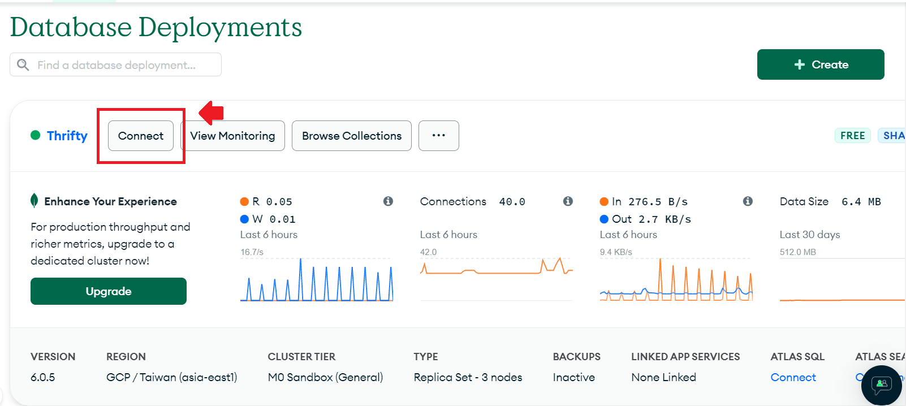

MongoDB概念介紹 + PyMongo基本CRUD操作教學
前言
因為課堂專案的關係需要用到MongoDB所以小學了一下，發現MongoDB真的是很香，撇開資料庫易用性，光是MongoDB Atlas提供每位使用者免費10GB的雲端資料庫空間(免填信用卡)，就很值得你辦個帳號來玩一下了。這篇文章會簡單介紹一下MongoDB，以及如何用python PyMongo完成資料庫的CRUD操作。
MongoDB Atlas
MongoDB Atlas是MongoDB的雲端資料庫平台服務，顧名思義你可以把你的資料存在雲端裡面，如果你是用drivers(ex: python, nodejs…)連線進去的話，基本上就是安裝個套件就搞定了，不用額外去下載或是設定一些雜七雜八的東西真的很方便，另外也因為是雲端服務，因此在團隊成員要連線進來也很容易，拿來run一個課堂專案是綽綽有餘了。
因為文章重點會放在MongoDB的觀念與操作，這裡就提供一篇教學讓大家自己看:
其實就是跟著指示做，都挺直覺的，雲端供應商的部分我也是選GCP，因為有台灣的region，這邊唯一要注意的是可連線IP的部分，要把IP地址加入名單中才能成功與資料庫建立連線，有個小撇步是只要在名單中加入0.0.0.0，就可以無視當前IP位址隨便連了~
MongoDb Introduction
Datebase architecture
MongoDB屬於General Purpose Document Database(文件資料庫)，先來了解一下幾個關鍵字:
Document: Basic unit of data
Collection: A grouping of documents
Database: A container for collections
Document Model
document是MongoDB的基本資料單位，每個document都以BSON格式儲存(類似JSON格式，但多了一些特殊的資料型態)，與關連式資料庫不同，MongoDB有polymorphic documents的特性，沒有寫死的schema，使用時不需要事先定義欄位、資料型態，相反的你想怎麼存就怎麼存，同個collection裡的document可以長的完全不一樣，BUT!!!，有彈性不代表就可以亂存，還是要視實際的使用情境來設計schema才不會害到自己喔。
Data Modeling
延續前面提到的schema，究竟該如何設計一個好的schema，MongoDB有提供兩個非常明確的原則
Thinking about the application rather than thinking about how it’s stored.
Data accessed together should be stored todether.
第一點是在說我們在設計資料庫schema時應該focus在「我們的application如何取用資料」，而不是「如何把資料存好」。
第二點則是與MongoDB的架構有關，因為資料都是以document為單位，因此把會一起使用到的資料都存在同一個document裡面，通常會比存在兩個分別的document裡面來的方便取用。
Relationship types
照上面這麼說的話，那簡單，全部塞進同個document就對了嗎? 其實也不對，因為每個documnet其實有16MB的size limit，所以我們還是要視情況來建立我們的關聯規則，以下介紹3種關聯規則以及MongoDB的建議的儲存方法。
- one to one
顧名思義就是一個對一個，以學生資料來說，每位學生都有自己獨特且唯一學號，這時候我們就沒必要把學號另外存在別的document，直接存在一起就好。
1 | { |
- one to many
現在假設我們還需要存每位學生的家長資料，畢竟每個人的家長資料肯定是不重複的嘛，所以我們還是想存在同一個document裡，這時候我們可以使用Embedding的技巧，簡單來說就是巢狀結構加下去就對了XD。
1 | { |
- many to many
繼續前面例子，每個學生每學期都會修很多課，並且同一堂課會有很多學生一起修，這時候我們如果用Embedding的話雖然很方便，但有點太浪費資料庫空間了，會出現很多重複的資料，這時我們可以視情況使用Referencing的技巧，基本上跟Embedding很像，改成存用來join的key。
1 | { |
要注意的是Embedding跟Referencing的使用時機是看情況決定!不是one to many就一定要用Embedding，也不是many to many就一定要用Referencing，還要考慮資料規模，如果one to many，但連出去的資料非常龐大，那一樣要改用Referencing才存得下。
CRUD in PyMongo
以防有人不知道CRUD是什麼，CRUD對應到database的4個基本操作Create、Read、Update、Delete，要在MongoDB操作CRUD有很多方法，除了使用MogoDB自己的CLI外，官方也提供豐富的libraries，以python來說就有兩個libraries，PyMongo負責處理同步連線、Motor負責處理非同步連線，接下來會介紹如何使用PyMongo來操作CRUD。
Beforehand
第一步當然是要先安裝套件:
1 | ! pip install pymongo |
接著我們import套件並建立連線:
1 | from pymongo import MongoClient |
其中，CONNECTION_STRING的格式長這樣，記得要換成自己的帳號、密碼:
1 | mongodb+srv://<user_name>:<password>@thrifty.0xdedx2.mongodb.net/?retryWrites=true&w=majority |
這串東西好長喔記不起來怎麼辦? 進入mongodb atlas後，可以在 Connect → Drivers → python 裡找到

我們可以直接透過client物件來建立或取用database，可以使用key-value的方式或呼叫object的方式，舉例來說我想要create一個名叫test_database的database，那我可以用:
1 | database = client.test_database # or |
同理，我們可以透過db物件來建立或取用collection:
1 | collection = database.test_collection # or |
好了，事前工作準備完成!
Create
在PyMongo中，我們可以使用insert_one/insert_many來插入新的document:
1 | # 要插入的資料 |
Read
在PyMongo中，我們可以使用find_one或find來尋找一個或多個的document:
1 | # find_one會回傳符合條件的第一筆資料(沒放條件的話就是collection的第一筆doc) |
我們可以在function中加入條件，來查找符合條件的資料，因為操作都差不多，所以接下來只用find_one做示範。
1 | collection.find_one({'name': 'a'}) |
上面的代碼會幫我們找到name等於a的資料，但其實這是一個簡化的寫法，MongoDB在進行條件篩選時通常會透過Comparison Operators的幫忙，實際上完整的寫法長這樣:
1 | collection.find_one({'name': {'$eq': 'a'}, 'gender': {'$eq': 'male'}}) |
這裡的$eq就是equal to的意思，因為是最基本的操作所以可以直接不寫，另外還有很多用於條件判斷的operator，舉例來說:
$gt: greater to
$lt: lower to
$gte: greater or equal to
$lte: lower or equal to
$ne: not equal to
除了Comparison Operators外，在處理多個條件時，我們通常需要使用Logical Operators來幫助我們做多條件的判斷，上面例子同樣因為是基本操作所以可以直接寫，實際上也可以這樣寫:
1 | collection.find_one({'$and': [{'name': {'$eq': 'a'}}, {'gender': {'$eq': 'male'}}]}) |
基本上跟一般程式語言的用法很像，常見的有:
$or: or
$not: not
上面只介紹了部分的query operators，想了解更多query operators可以參考這裡。
Update
PyMongo中用來更新document的function有三大類，分別是
replace_oneupdate_one/update_many
差別在於replace會把整個documnet都取代為新的，update則只會去更新document中被指定的部分。兩者在使用上都由三個部分組成，分別是filter、replacement/update和options，其中filter是篩選的條件，寫法跟前面find一樣，replacement/update是要更新的document/部分document，options則是更新時可以設定的選項。
1 | # template |
要特別留意的是，在update的部分一定要搭配使用Update Operators，否則會執行失敗!常用的operators有:
$set: set to new value
$push: appends value to an array
$inc: increased by value
最後options部分，這邊只提最常被使用到的upsert(update+insert)，預設為False，如果將upsert設為True的話，那就算filter部分沒有找到符合的document，也會順便幫我們執行insert的動作。
1 | # 尋找name為d的document並取代為新documnet，因為沒有這個document而且upsert=True，所以會直接insert |
Delete
PyMongo中用來刪除document的function是delete_one與delete_many，用法跟find基本一樣~
1 | collection.delete_one({'name': 'a'}) # 刪除符合條件的第一筆資料 |
bulk_write
前面的操作都一次針對一個條件進行動作，假如我們想要快速地執行多個不同動作該怎麼辦呢? 這時我們可以將原先的CRUD指令包裝成Object，並透過bulk_write來進行批次操作。
1 | from pymongo import InsertOne, DeleteMany, ReplaceOne, UpdateOne |
結語
MongoDB在網路上的教學資源真的很豐富，官方也有提供免費課程，想要上手真的不是一件難事，我都邊寫邊懷疑自己寫這篇到底有多大價值，因為網路上其他地方大概也都找的到類似的內容，不過抱持著當做筆記說不定哪天旺季會想回來看的精神，還是乖乖把他寫完了XDDD